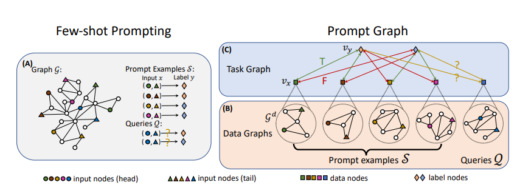

ICL over Graphs : PRODIGY¶
In this note, I will cover the following paper "PRODIGY : Enabling in-context learning over graphs".
NOTE : Definition of In-context Learning (ICL) is already covered.
1. Abstract¶
- ICL is the ability of a pretrained model to adapt to novel and diverse downstream tasks by conditioning on prompt examples, without optimizing any parameters.
- The first pretraining framework that enables ICL over graphs - PRODIGY (Pretraining Over Diverse In-Context Graph Systems)
2. Introduction¶
- ICL : Capability of a pretrained model to perform diverse tasks directly at the prediction time when prompted with just a few examples, without any model training or fine tuning.
- Challenges :
- How to formulate node-, edge- and graph-level tasks over graphs with a unified task representation so that model performs diverse tasks without any fine-tuning or retraining.
- How to design model architecture and pre-training objectives that enables model to achieve ICL over graphs.
- Existing Work :
- Pre-training just learns good graph encoder and then fine-tuning is done for each downstream task.
- Meta-learning generalizes across tasks within the same graph.
- ICL over graph means generalizing across graphs and tasks without any fine-tuning or retraining.

- PRODIGY :
- It proposes prompt graph which unifies node-, edge- and graph-level tasks over graphs.
- For pre-training, it uses in-context pretraining objectives (Neighbor Matching & Multi Task) which is a self-supervised task.
- It also defines a GNN structure and an attention mechanism to communicate over prompt graph.
3. Few-shot Prompting¶
- We define a graph as \(\mathcal{G} = (\mathcal{V},\mathcal{E}, \mathcal{R})\), where \(\mathcal{V},\mathcal{E}, \mathcal{R}\) represent the set of nodes, edges and relations. An edge \(e = (u,r,v) \in \mathcal{E}\) consists of a subject \(u \in \mathcal{V}\), a relation \(\mathcal{r} \in \mathcal{R}\) and an object \(v \in \mathcal{V}\).
- Suppose, we have a m-way classification task with |\(\mathcal{Y}\)| = m classes and we define k-shot prompt.
- prompt examples : \(\mathcal{S} = \{(x_i, y_i)\}_{i=1}^{m \cdot k}\) with k examples per class \(y \in \mathcal{Y}\).
- query set : \(\mathcal{Q} = \{x_i\}_{i=1}^n\) for which we want to predict the labels for.
4. Prompt Graph¶
4.1. Data Graph¶
- To generate data graph \(\mathcal{G}^D\), sample the k-hop neighbour of the input node set from the source graph \(\mathcal{G}\).
- For node classification, the input node set is a singleton set of target node. For link prediction, it is a pair of nodes.
4.2. Task Graph¶
- Task graph \(\mathcal{G}^T\) consists of data nodes (\(v_{x_i}\)) and label nodes (\(v_{y_i}\)).
- The data graph \(\mathcal{G}_i^D\) is aggregated into a single node \(v_{x_i}\) and the label \(y_i\) is represented by a label node \(v_{y_i}\).
- So, a task graph contains (mk + n) data nodes and m label nodes.
- For query set, we add single directional edge from label node to query data node.
- NOTE : This is done to avoid information leakage from query set to prompt set.
- For prompt examples, we add bi-directional edge between label node and data node. The edge with true labels are marked \(T\), others are marked \(F\).
5. Pre-training : Message Passing Architecture¶
5.1. Data Graph Message Passing¶
- Used GraphSAGE for data graph \(\mathcal{G}^D\) to learn embeddings \(E\) for each node. \(E \in \mathcal{R}^{|\mathcal{V^D}| \text{ x d}}\)
- For node prediction : \(E_{v_{x_i}}\) = \(E_{v_i}\) (take the node embedding of node \(v_i\))
- For link prediction : \(E_{v_{x_i}}\) = \(W^T(E_{v_{i1}} || E_{v_{i2}} || max(E_j \:\:\forall_{j \in \mathcal{G}^D})) + b\)
- concatenate the node embeddings of two nodes with max-pooling of all the node embeddings in the data graph
- Then project it back to \(d\)-dimensional embedding space
- \(W \in \mathcal{R}^{\text{3d x d}}\) is a learnable weight matrix and \(b \in \mathcal{R}^d\) is a learnable bias vector.
5.2. Task Graph Message Passing¶
- The embedding of label node \(v_{y_i}\) can either be initialized with random Gaussian or additional information available about the labels.
- Each edge also has two binary features \(e_{ij}\) that indicate
- whether the edge comes from an example or a query, and
- the edge type of \(T\) or \(F\).
- The GNN architecture uses attention mechanism using \(K\), \(Q\), \(V\) values and is similar to a transformer.
5.3. Prediction Read-out¶
- Take classfication logits \(O_i\) by taking cosine similarity between query and label node embedings.
6. Pre-training : In-context pretraining objectives¶
6.1. Neighbor Matching¶
- This is Self-supervised task.
- We sample multiple subgraphs from \(\mathcal{G}_{\text{pretrain}}\) as local neighbourhood and we say a node belongs to the neighbourhood if it is in the sampled subgraph.
- \(\mathtt{NM}_{k, m}\) is sampler which generates \(m\)-way neighbor matching with \(k\)-shot prompt examples and labels of the queries.
- First, sample \(m\) nodes from \(\mathcal{G}_{\text{pretrain}}\) and each node corresponds to one class.
- Then, sample \(k\) nodes from \(l\)-hop neighbourhood of each class node \(c_i\).
- Lastly, sample \(\lceil \frac{n}{m} \rceil\) nodes from each class node \(c_i\). This will be the query set.
6.2. Multi-task¶
- This is Supervised task.
- If node/edge level labels are present for \(\mathcal{G}_{\text{pretrain}}\), then we can leverage them to construct pretraining task similar to neighbor matching.
- Sample \(m\) labels from whole label set. Then sample \(k\) support exampls for each label class.
- Lastly, sample \(\lceil \frac{n}{m} \rceil\) nodes from each label class to form the query set.
6.3. Prompt Graph Augmentation and Pretraining Loss¶
- Prompt Graph Augmentation :
- Node Dropping : From the data graph of samples and queries, randomly drop few nodes from its \(l\)-hop neighborhood.
- Node Feature Masking : From the data graph of samples and queries, mask the features as zero vector for few nodes randomly.
- Pretraining Loss :
- \(\mathcal{L} = \underset{x_i \in \mathcal{Q}_{\mathtt{task}}}{\mathbb{E}} \mathtt{CE}(O_{\mathtt{task, i}}, y_{\mathtt{task, i}})\) where \(\mathtt{task}\) = \(\mathtt{NM}\) and \(\mathtt{MT}\).
- This is cross-entropy loss between logits and true class label.